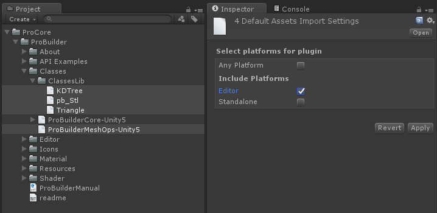
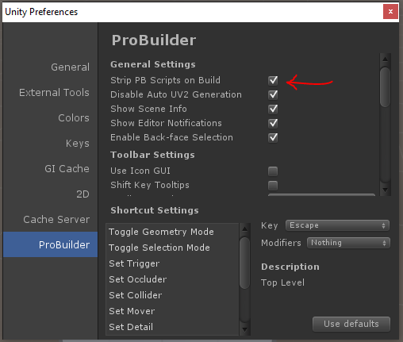
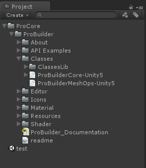
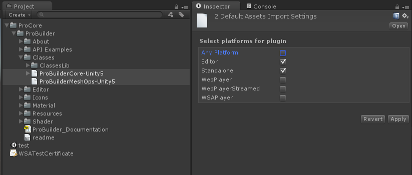
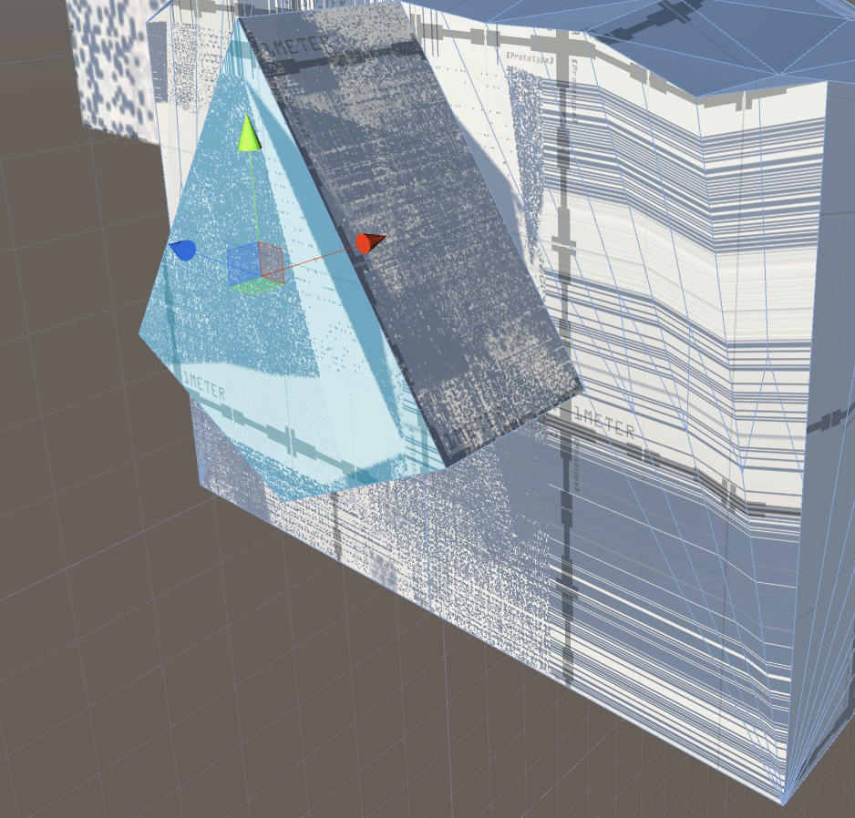

Convert to Package Manager / Upgrading to 3.0
In most cases, the process to upgrade a Unity project using ProBuilder 2.9.8 or lower to ProBuilder 3.0.0 or higher is simply to import the latest version. However, if that fails you may manually invoke the upgrade utility.
Tools/ProBuilder/Repair/Convert to Package Manager
To force the Convert to Package Manager utility to run, context click in the window and select "Find and Replace Deprecated File Ids."
Source Code
Currently source code access is not available. We're working on getting it published soon.
API
The ProBuilder API is currently considered to be in beta. It will change before the final release.
Pink Shaders
If you are upgrading a project from the Asset Store package make sure to run the Convert to Package Manager utility.
If you're using the new Standard Rendering Pipeline you may have issues compiling the ProBuilder default shader. As a workaround, you can set the default material for ProBuilder in:
Edit > Preferences > ProBuilder
Under "Default Material."
Error building Player (Windows Store, iOS, Android, WebGL)
Usually seen with console errors:
Error building Player: UnityException: Failed to run serialization weaver with commandReference Rewriter found some errors with command
To get things compiling again, you need to mark the ProBuilder Mesh Operations DLLs as Editor only.

The caveat is that this means you won't be able to access any of the ProBuilder mesh operations API at runtime.
If this step does not address the build issues, it may be necessary to strip ProBuilder scripts entirely before compile. Fortunetely this is also trivial:
-
First make sure that
Strip PB Scripts on Buildis checked in the Preferences/ProBuilder panel.
-
Next, locate
ProBuilderCore-Unity5.dllandProBuilderMeshOps-Unity5.dllin your project.
-
With both
ProBuilderCore-Unity5andProBuilderMeshOps-Unity5selected, in the Inspector window un-check "Any Platform." Then toggle both "Editor" and "Standalone."
If you're using ProBuilder 2.5 or lower, some errors will appear when scripts reload. Open the following files (in ProBuilder/API Examples):
- IcoBumpin.cs
- HueCube.cs
- RuntimeEdit.cs
In each of these files, place this line at the very beginning:
#if UNITY_EDITOR || UNITY_STANDALONE
and this line at the very end:
#endif
For example, here's what RuntimeEdit.cs looks like:
#if UNITY_STANDALONE || UNITY_EDITOR
using UnityEngine;
using System.Collections;
using ProBuilder2.Common;
namespace ProBuilder2.Examples
{
/**
* \brief This class allows the user to select a single face at a time and move it forwards or backwards.
* More advanced usage of the ProBuilder API should make use of the pb_Object->SelectedFaces list to keep
* track of the selected faces.
*/
public class RuntimeEdit : MonoBehaviour
{
// ... etc
}
}
#endif
Now compile your project and run!
Missing Icons
If you upgraded ProBuilder and are now missing icons in the toolbar, first try restarting Unity.
If that does not work,
- Delete this folder:
ProCore/ProBuilder/Resources/GUI - Re-import ProBuilder from Asset Store / ProCore Downloads
Spotty Textures on Lightmapped Objects

The object does not have a UV2 channel built.
- Select the affected objects
- Click
Generate UV2in the ProBuilder Toolbar
FbxPrefab could not be found. Are you missing an assembly reference?
Assets/ProCore/ProBuilder/Editor/Addons/pb_Fbx.cs(62,35): error CS0246: The type or namespace name `FbxPrefab' could not be found. Are you missing an assembly reference?
This error may occur if you have imported the FbxExporters Unity package, then later removed it. To fix this error, you can either:
- Re-import the FbxExporter package
- Open
Edit > Project Settings > Playerand in the Scripting Define Symbols field deletePROBUILDER_FBX_ENABLED.